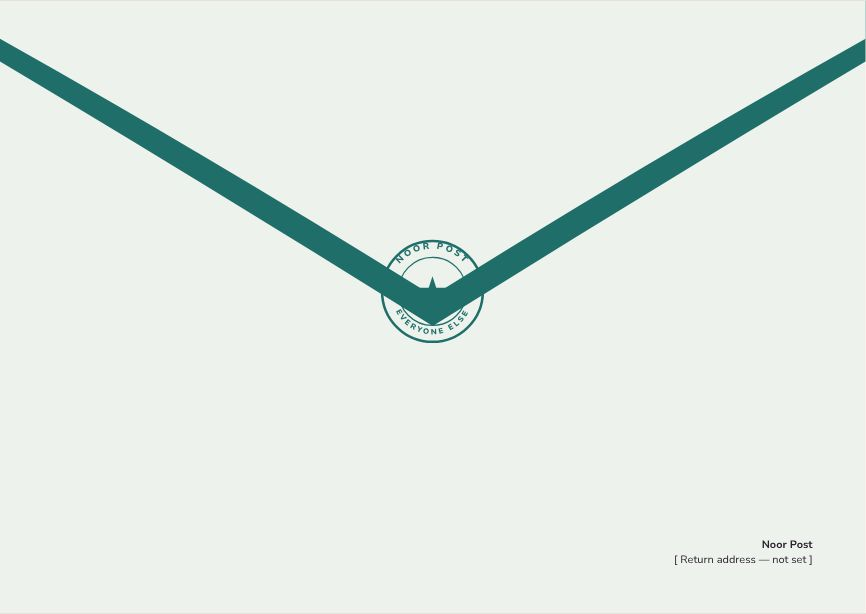
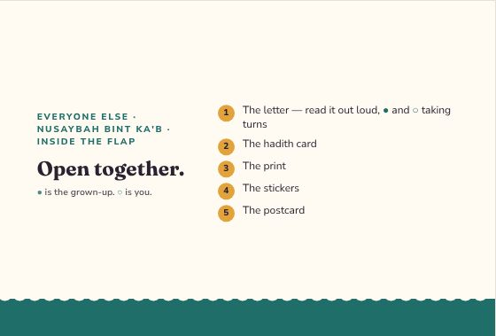
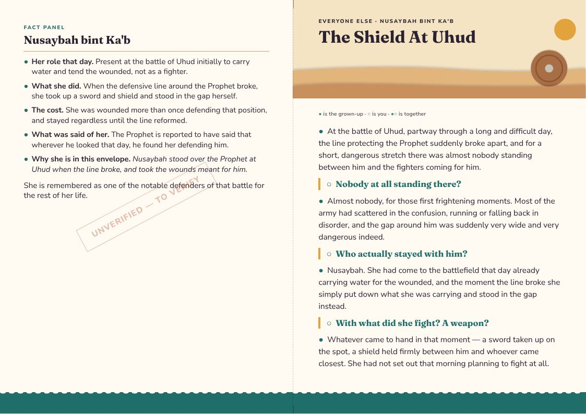
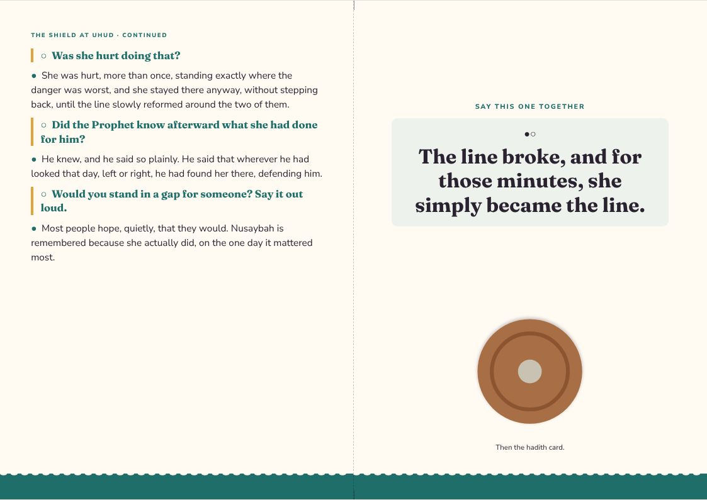
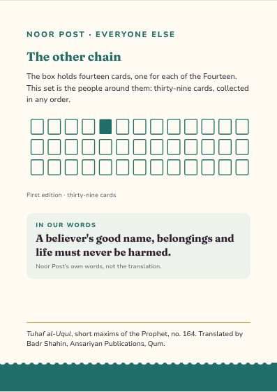
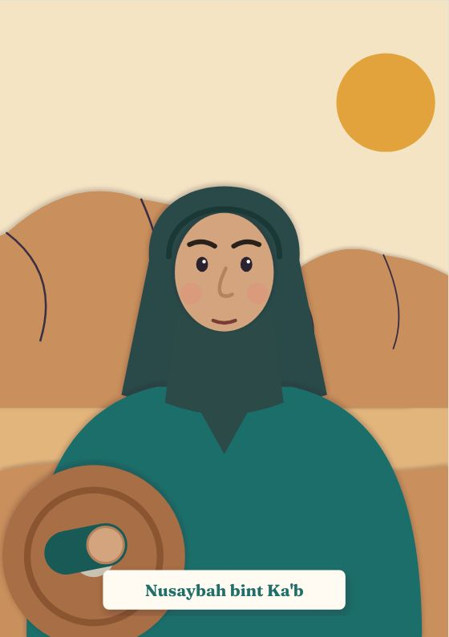
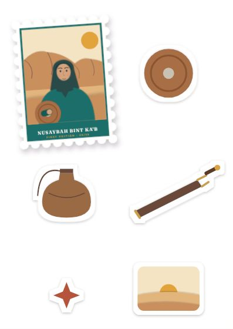
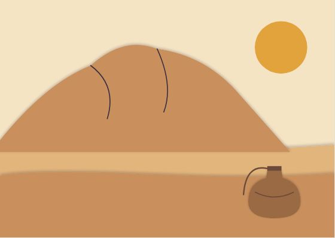

Everyone Else
Nusaybah bint Ka'b
Nusaybah stood over the Prophet at Uhud when the line broke, and took the wounds meant for him.
Inside the flap
Open together.
- The letter — read it out loud, ● and ○ taking turns
- The hadith card
- The print
- The stickers
- The postcard
● is the grown-up. ○ is you.
The Shield At Uhud
● the grown-up · ○ the child · ●○ together
●At the battle of Uhud, partway through a long and difficult day, the line protecting the Prophet suddenly broke apart, and for a short, dangerous stretch there was almost nobody standing between him and the fighters coming for him.
○Nobody at all standing there?
●Almost nobody, for those first frightening moments. Most of the army had scattered in the confusion, running or falling back in disorder, and the gap around him was suddenly very wide and very dangerous indeed.
○Who actually stayed with him?
●Nusaybah. She had come to the battlefield that day already carrying water for the wounded, and the moment the line broke she simply put down what she was carrying and stood in the gap instead.
○With what did she fight? A weapon?
●Whatever came to hand in that moment — a sword taken up on the spot, a shield held firmly between him and whoever came closest. She had not set out that morning planning to fight at all.
○Was she hurt doing that?
●She was hurt, more than once, standing exactly where the danger was worst, and she stayed there anyway, without stepping back, until the line slowly reformed around the two of them.
○Did the Prophet know afterward what she had done for him?
●He knew, and he said so plainly. He said that wherever he had looked that day, left or right, he had found her there, defending him.
○Would you stand in a gap for someone? Say it out loud.
●Most people hope, quietly, that they would. Nusaybah is remembered because she actually did, on the one day it mattered most.
●○The line broke, and for those minutes, she simply became the line.
Letter, reverse
NUSAYBAH BINT KA'B
●Her role that day. Present at the battle of Uhud initially to carry water and tend the wounded, not as a fighter.
●What she did. When the defensive line around the Prophet broke, she took up a sword and shield and stood in the gap herself.
●The cost. She was wounded more than once defending that position, and stayed regardless until the line reformed.
●What was said of her. The Prophet is reported to have said that wherever he looked that day, he found her defending him.
●Why she is in this envelope. Nusaybah stood over the Prophet at Uhud when the line broke, and took the wounds meant for him.
She is remembered as one of the notable defenders of that battle for the rest of her life.
Hadith card · First Edition 05 / 39
It is illicit to violate anything of the believer: his honor, wealth, and blood—all are sanctified.
Tuhaf al-Uqul, short maxims of the Prophet, no. 164 · trans. Badr Shahin
A saying of the Prophet, matched to courage that shields somebody else.
Selected, confidence low — on the verification worklist and not yet cleared for print.
The design
Everyone Else — one style for the line
Every companion envelope shares one style, so the thirty-nine belong together: each front carries its person as a stamp. Every item at true size → · Print PDF


















The artwork fixes composition, colour and medium for every item; final illustration is still to be commissioned. The fact panel is still to verify.